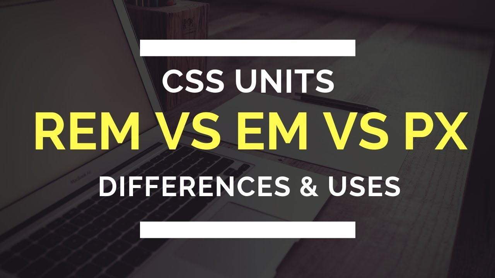
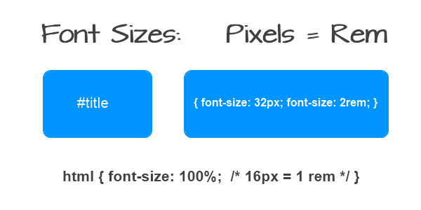

I believe that using the relative length units would be more convienient rather than using absolute sizes for the reason
to make the web design customed to responsiveness. Certainly using absolute sizes will force us to use page zoom.
In most browsers the default width is 16px. And all font-sizes should scale accordingly.
However, if the website explicitly sets font-sizes in pixels, a heading set at 30px will always be 30px.
however setting font sizes in pixels doesn’t completely ruin accessibility. The user can still zoom in and out.
The default browser font-size in percentage is obtained by setting the HTML font-size to 62.5%. 62.5% of 16px (typical default browser font-size) is
10px. That would still make 1.6rem = 16px. This now means that if the user’s default browser font-size is changed to,
for example, 20px, 1.6rem would now equal 20px.
A percentage value-65%, for example- works much like an em, in that it is relative to some other value. For this reason,
percentage values are another powerful tool for building responsive websites.
Em's value is relative to the font size of the element’s parent. The relative nature of an em makes it an essential
for bulding responsive web designs.Meanwhile, a rem unit is relative to the root element.
Eventhough the possibility of page zooming is made available on the responsive browsers enabiling the
users to get a better text-size that is much more convienient.

Using the various units of conversion, the default browser's font size is 16px equal with 100% similarly equal to 1 rem. This means that our default browser is set to 16pxs.
Since percent and rem are relative measurements they depend on whether the size of the root element or the size of the current element.
The browser interprets units from the cascading stylesheets relative to the predefined sizes using some calculations.
For instance, if the font size is not explicitly given, the browser takes its default size , which is often 16px.
By default 1rem = 16px. If the size is set to 200px , 1px is equal to 0.005 rem in this case, but this will be hard for calculation.
This can be computed using percentage, ie. 16px = 100% =1 rem. Setting the font size to 1250% , for the reason that 1250% of 16 px is 200px,
in our given case 1 rem = 200px.
Box Shadow
One of the CSS3 new features is the box-shadow property that adds a shadow to an element. Instead of using multiple images around an item, this property lets you add shadow with a short line of code.
Opacity
One of the CSS3 properties called opacity makes elements see-through or completely transparent.
For instance, you can apply opacity to images or other HTML elements. The transparency level depends on the indicated values.
Rounded Corners
Before the release of CSS3, developers had to write long code to produce rounded corners. Now, it is enough to apply the border-radius CSS3 property to HTML elements.
Attribute Selectors
CSS3 also introduced new selectors in addition to the ones in CSS2. Instead of applying IDs or classes for styling, developers can select HTML elements according to their attributes.As a result, you do not have to create unique IDs only to apply CSS rules.
New Colors
One of the CSS3 features is the addition of new colors: